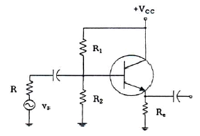
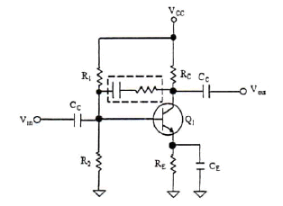
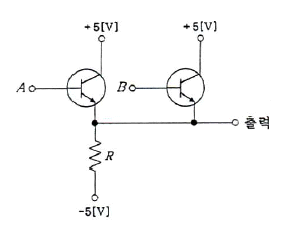
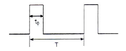
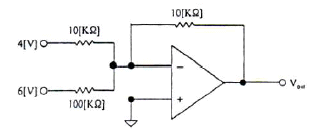
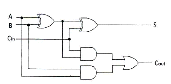
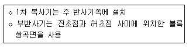
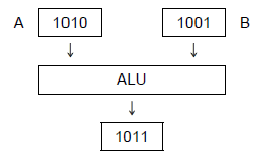

방송통신기사 (2013-10-12 기출문제)
1과목: 디지털 전자회로
1. 그림과 같은 에미터폴로우 회로에서 h-파라메타가 hie=2.1[kΩ], hfe=100이고, R1=10[kΩ],R2=10[kΩ], Re=4[kΩ]일 때, 입력저항은 약 얼마인가?

- 402[kΩ]
- 404[kΩ]
- 406[kΩ]
- 408[kΩ]
(정답률: 41%)

2. 다음 주어진 회로에서 점선으로 표시된 회로의 기능이 아닌 것은?

- 증폭 이득을 조절할 수 있다.
- 입출력 임피던스를 조절할 수 있다.
- 대역폭을 조절할 수 있다.
- 온도 특성을 조절할 수 있다.
(정답률: 56%)
3. 다음 그림에서 정논리의 경우 게이트 명칭은?

- AND 게이트
- OR 게이트
- NAND 게이트
- NOR 게이트
(정답률: 53%)
4. 다음 중 계수형 전자 계산기(Digital Computer)의 보조 기억 장치가 아닌 것은?
- 자기 드럼(Magnetic Drum)
- 자기 테이프(Magnetic Tape)
- 자기 디스크(Magnetic Disk)
- 자기 코어(Magnetic Core)
(정답률: 62%)
5. 다음 중 정전압 회로의 안정도 파라미터에 해당되지 않는 것은?
- 전압안정계수
- 온도안정계수
- 출력저항
- 출력직류전압
(정답률: 42%)
6. 플립플롭은 몇 개의 안정 상태를 갖는가?
- 1
- 2
- 4
- ∞
(정답률: 57%)
7. 펄스부호변조(PCM) 방식에서 아날로그 신호를 디지털 신호로 변환시키는 과정을 바르게 나타낸 것은?
- 표본화 → 양자화 → 부호화 → 압축
- 표본화 → 부호화 → 양자화 → 압축
- 표본화 → 양자화 → 압축 → 부호화
- 표본화 → 압축 → 양자화 → 부호화
(정답률: 55%)
8. 다음 그림과 같은 주기적인 펄스파형의 듀티비(Duty Ratio)는 얼마인가?(오류 신고가 접수된 문제입니다. 반드시 정답과 해설을 확인하시기 바랍니다.)

- 10[%]
- 12[%]
- 20[%]
- 22[%]
(정답률: 46%)
9. RC 회로의 출력에서 최종치의 10[%]~90[%]까지 얻는데 소요되는 시간을 무엇이라 하는가?
- 지연 시간
- 하강 시간
- 상승 시간
- 전이 시간
(정답률: 57%)
10. 십진수 10.375를 2진수로 변환하면?
- 1011.101(2)
- 1010.101(2)
- 1010.011(2)
- 1011.110(2)
(정답률: 51%)
11. 다음과 같은 연산증폭기 회로의 출력 전압은?

- -64[V]
- -4.6[V]
- +64[V]
- +4.6[V]
(정답률: 55%)
12. 다음 중 발진조건에 대한 설명으로 틀린 것은?
- 궤한증폭기의 이득(A)과 궤환율(β)의 곱이 1보다 작으면 발진 진폭이 감소한다.
- 궤환증폭시 입력신호와 궤환신호의 위상이 180° 차이가 난다.
- 증폭된 출력의 일부를 입력쪽으로 정궤환시켜야 한다.
- 발진이 지속될 수 있는 상태를 유지하기 위해서는 βA=1 조건을 만족해야 한다.
(정답률: 54%)
13. 조합 논리 회로 중 0과 1의 조합으로 부호화를 행하는 회로로 2n개의 입력선과 n개의 출력 선으로 구성된 것은?
- 디코더(Decoder)
- DEMUX
- MUX
- 인코더(Encoder)
(정답률: 61%)
14. 다음 중 FET(Field Effect Transistor) 대한 설명으로 옳지 않은 것은?
- 입력저항이 수 [MΩ]으로 매우 크다.
- 다수 캐리어에 의해 동작하는 단극성 소자이다.
- 접합트랜지스터(BJT)보다 잡음이 심하다.
- 이득대역폭이 좁다.
(정답률: 59%)
15. 수정발진기는 어떤 효과를 이용한 것인가?
- 차폐효과
- 압전기 효과
- 홀 효과
- 제에벡 효과
(정답률: 41%)
16. 정류회로 출력 성분 중 교류인 리플을 제거하기 위해 정류회로 다음 단에 접속되는 회로는 무엇인가?
- 평활 회로
- 클램핑 회로
- 정전압 회로
- 클리핑 회로
(정답률: 50%)
17. 다음 중 위상변조에 대한 설명으로 틀린 것은?
- 위상을 변조신호에 의해 직선적으로 변하게 하는 방식이다.
- 변조지수는 위상감도계수에 비례한다.
- PM방식을 사용하여 FM신호를 만들 수 있다.
- 반송파를 중심으로 3개의 측파대를 가지며 그 크기는 변조지수에 관계된다.
(정답률: 38%)
18. 플립플롭 4개로 구성된 계수기가 가질 수 있는 최대의 2진 상태는 몇 가지인가?
- 8가지
- 12가지
- 16가지
- 20가지
(정답률: 65%)
19. 다음 회로는 어떤 회로인가?

- 반가산기 2개와 OR게이트를 이용한 전가산기 회로
- 반가산기 3개와 OR게이트를 이용한 전가산기 회로
- 반가산기 2개와 NOR게이트를 이용한 전가산기 회로
- 반가산기 3개와 NOR게이트를 이용한 전가산기 회로
(정답률: 51%)
20. 반파정류회로를 사용한 전원설비를 전파정류회로로 변경하면 리플률은 어떻게 변화되는가?
- 약 1.5배 증가한다.
- 약 2.5배 감소한다.
- 약 3.5배 증가한다.
- 약 4.5배 감소한다.
(정답률: 53%)
2과목: 방송통신 기기
21. 비디오텍스의 특성에 대한 설명으로 옳지 않은 것은?
- 컴퓨터와 통신에 대한 전문적인 지식이 없는 사용자도 필요한 정보를 즉시 제공받을 수 있다.
- 정보 센터에는 많은 양의 정보를 가지고 있으므로, 사용자가 필요한 충분한 정보입수가 가능하다.
- 정보 센터에서 정보를 갱신하면 언제나 새로운 정보를 얻을 수 있다.
- 단방향 통신기능으로 인해 다양한 서비스를 받을 수 있다.
(정답률: 85%)
22. 다음의 방송장비 중 서로 다른 영상신호 간의 동기신호를 정학하게 일치시키기 위하여 사용하는 장비는?
- FS
- VDA
- CG
- DVE
(정답률: 89%)
23. 케이블 방송에서 수신한 지상파 방송을 재전송하기 위하여 여러 개의 신호를 하나로 묶는데 사용되는 장비는?
- 변조기
- 복조기
- 다중화기
- 신호처리기
(정답률: 79%)
24. 다음 중 아날로그 컬러 TV 신호의 측정과 거리가 먼 것은?
- 영상압축율
- 선형왜곡
- 비선형왜곡
- 노이즈
(정답률: 62%)
25. 인터넷방송을 위하여 일 대 다수로 일련의 그룹이 전송을 받을 수 있는 스트리밍 전송방식은?
- 유니캐스트
- 멀티캐스트
- 브로드캐스트
- 애니캐스트
(정답률: 83%)
26. NTSC 컬러 TV에서의 영상신호와 음성신호의 변조방식은?
- 영상 : AM변조, 음성 : FM변조
- 영상 : AM변조, 음성 : AM변조
- 영상 : FM변조, 음성 : FM변조
- 영상 : FM변조, 음성 : AM변조
(정답률: 87%)
27. 인터넷 방송을 위한 가입자의 인증, 보호 및 콘텐츠의 저작권 보호를 위한 기술이 아니 것은?
- 워터마크(Watermarking)
- DRM(Digital Right Management)
- CAS(Conditional Access System)
- UI(User Interface)
(정답률: 92%)
28. 방송국 내의 전송기기 사이에 주고 받고 있는 영상 신호의 기본 레벨로 맞는 것은?
- 영상부 : 약 0.7[Vp-p], 동기부 : 약 0.3[Vp-p]
- 영상부 : 약 1[Vp-p], 동기부 : 약 0.3[Vp-p]
- 영상부 : 약 0.7[Vp-p], 동기부 : 약 1[Vp-p]
- 영상부 : 약 [Vp-p]1, 동기부 : 약 0.7[Vp-p]
(정답률: 81%)
29. 다음 중 스위처에서 얻어진 다양한 휘도 및 색도에 의해 원하는 부분을 키잉(Keying) 할 수 있는 것은 무엇인가?
- 매트 키(Matte key)
- 크로마 키(Chroma key)
- 리니어 키(Linear key)
- 루미넌스 키(Luminance key)
(정답률: 65%)
30. 현재의 HDTV보다 화질이 5배 이상 더 선명하며, 4G 서비스와 더불어 새로운 멀티미디어 서비스의 한 축으로 발전할 방송서비스는?
- UHD TV
- 홀로그래픽
- 3DTV
- SDTV
(정답률: 81%)
31. 다음 중 NTSC용 웨이브폼 모니터에서 측정된 50[IRE] 몇 [mV]인가?
- 357[mV]
- 350[mV]
- 346[mV]
- 334[mV]
(정답률: 85%)
32. 디지털라디오방송방식인 Eureca-147 DAV의 대역폭은?
- 약 1[MHz]
- 약 1.5[MHz]
- 약 3[MHz]
- 약 6[MHz]
(정답률: 71%)
33. NTSC 컬러TV 동기 신호의 종류가 아닌 것은?
- 세그먼트 동기펄스
- 수평동기펄스
- 등화펄스
- 수직동기펄스
(정답률: 73%)
34. 다음 중 위성통신의 장점이 아닌 것은?
- 산간, 도서 지역을 불문하고 난시청을 해소할 수 있다.
- 대용량으로 많은 통신 용량을 가지고 대용량 서비스가 가능하다.
- 다원접속 및 고품질의 광대역 통신이 가능하다.
- 포인트 투 포인트(Point to Point) 통화 구성만이 가능하다.
(정답률: 85%)
35. Color의 위상각을 교정 또는 측정하는데 사용하는 계측기는?
- 벡터스코프
- 웨이브폼모니터
- 오실로스코프
- 전위차계
(정답률: 81%)
36. 다음 중 위성의 궤도에 따른 분류 방법이 아닌 것은?
- 중궤도 위성
- 고궤도 위성
- 저궤도 위성
- 자유궤도 위성
(정답률: 86%)
37. 다음 중 위성 방송용 파라볼라 안테나에서 수신 전파의 주파수대는 12[GHz], 안테나의 직경은 1[m], 안테나의 개구효율이 0.64라고 할 때 이득은 약 몇 [dB]인가?
- 20[dB]
- 30[dB]
- 40[dB]
- 50[dB]
(정답률: 75%)
38. 2,400[bps]의 디지털 신호를 전송시 한 번에 3[bit]의 신호를 전송 할 경우 이는 몇 [baud]에 해당되는가?
- 200[Baud]
- 800[Baud]
- 6,400[Baud]
- 7,200[Baud]
(정답률: 87%)
39. 임피던스가 25[Ω]인 반파장 안테나와 특성임피던스가 100[Ω]인 선로를 정합하기 위한 임피던스 값은?
- 150[Ω]
- 250[Ω]
- 25[Ω]
- 50[Ω]
(정답률: 89%)
40. 텔레비전 방송에서 시스템의 조절 및 조정을 위하여 타임 신호를 발생시키는 장치는?
- 동기신호 발생기(Sync Generator)
- 파형신호 발생기(Pattern Generator)
- 영상신호 발생기(Video Signal Generator)
- 고주파신호 발생기(Radio Generator)
(정답률: 79%)
3과목: 방송미디어 공학
41. 카메라 조리개의 밝기를 구하는 식으로 올바른 것은? (단, Ev : 피사체 조도, Ei : 광전면 조도, F :렌즈 조리개(F값), V : 확대율(실제로는 V<<1이 좋다), R : 피사체의 반사율(약 0.8),T : 렌즈의 투과율(약 0.8))
- Ev = {Ei×4F×(1+V)} / (R×T)
- Ev = {Ei×4F2×(1+V)} / (R×T)
- Ev = {Ei×4F3×(1+V)} / (R×T)
- Ev = {Ei×4F4×(1+V)} / (R×T)
(정답률: 76%)
42. 다음 중 화면에서 여름의 대낮이나 햇볕의 강함을 강조하며 명암의 대비를 확실히 하기 위해 밝은 곳은 더 밝게, 어두운 곳은 더 어둡게 느끼게 하는 조명기법으로 가장 적절한 것은?
- 하이 키(high key)
- 로우 키(Low key)
- 플랫 킷(Flat key)
- 하드 키(Hard key)
(정답률: 74%)
43. 다음 중 유럽의 디지털 지상파TV 방송방식인 DVB-T에서 이동수신 서비스를 제공하기에 가장 적합한 변조 모드는?
- 2k mode
- 4k mode
- 8k mode
- 16k mode
(정답률: 71%)
44. 영상 처리 기법 중 출력 이미지의 각 픽셀값을 결정하는 데에는 오직 입력 이미지의 대응되는 픽셀값만 이용되는 처리방법을 무엇이라 하는가?
- 포인트 처리
- 영역 처리
- 기하학적 처리
- 프레임 처리
(정답률: 71%)
45. 음향 시스템에서 이퀄라이저의 삽입 위치로서 적절하지 않은 것은?
- 파워 앰프와 스피커 사이
- 믹서의 인서트 단자
- 믹서와 스피커 컨트롤러 사이
- 믹서와 앰프 사이
(정답률: 75%)
46. 다음 중 파장과 주파수와의 관계를 잘못 설명한 것은?
- 파장과 주파수의 곱은 항상 일정하다.
- 파장은 주파수에 반비례한다.
- 주파수가 낮을수록 파장은 길다.
- 주파수가 높을수록 파장과 주파수의 곱은 커진다.
(정답률: 67%)
47. 디지털 방송기술의 특징이 아닌 것은?
- 압축 부호화
- 다중화 및 오류정정
- 협대역
- 디지털 변조
(정답률: 84%)
48. 화이트 노이즈에 대한 설명으로 틀린 것은?
- 주파수 특성이 평탄한 신호이다.
- 음향 시스템의 특성을 측정하는 신호이다.
- 옥타브 필터로 분석하면 3[dB/oct] 상승하는 특성이 된다.
- 사인파의 특성과 유사하다.
(정답률: 74%)
49. 어떤 음을 듣고 있을 때 이보다 진폭이 큰 음이 가해지면 원래의 음이 들리지 않는 것을 무엇이라고 하는가?
- 마스킹 효과
- 바이노럴 효과
- 칵테일 파티 효과
- 하스 효과
(정답률: 83%)
50. 다음 영상미디어 압축 방식 중 자주 발생하는 값에 적은 비트를 드물게 나타나는 값에는 많은 비트를 할당하는 방법으로서 통계적으로 중복성을 제거하는 방법은?
- DCT 변환 부호화
- Huffman 부호화
- DPCM 예측 부호화
- PCM 방식
(정답률: 77%)
51. 다음 주파수에 의한 방송의 분류 중 파장이 가장 짧은 것은 무엇인가?
- VHF 방송
- UHF 방송
- HF 방송
- MF 방송
(정답률: 75%)
52. TV 주사방식 중에서 비월주사이고 주사선수가 525라인이며 필드(Field) 주파수가 60[Hz]이라면,이 때 수평주사 주파수는 몇 [Hz]인가?
- 15,550[Hz]
- 15,750[Hz]
- 15,850[Hz]
- 15,970[Hz]
(정답률: 78%)
53. 다음 중 버스트 신호를 기준(0°)으로 한 위상각을 설명한 것으로 바르지 않은 것은?
- 적 : 약 77°
- 마젠타 : 약 119°
- 청 : 약 290°
- 시안 : 약 257°
(정답률: 71%)
54. 다음 중 직사광에 해당하는 빛을 내며 빛의 방향성, 명암이나 그림자에 의한 입체감 등을 표현하기 위한 조명기구로 가장 적절한 것은?
- 스포트 라이트(Spot light)
- 플로드 라이트(Flood light)
- 베이스 라이트(Base light)
- 이펙트 라이트(Effect light)
(정답률: 83%)
55. 다음 중 MPEG의 오디오 압축에 사용되지 않는 기술은?
- 서브밴드코딩
- DCT
- 저역·고역 주파수 일부 생략
- 해밍코딩
(정답률: 53%)
56. NTSC 방식 음성신호의 반송파 주파수는?
- 음성신호 반송파주파수는 영상신호 반송파주파수보다 4.3[MHz] 높은 주파수이다.
- 음성신호 반송파주파수는 영상신호 반송파주파수보다 4.4[MHz] 높은 주파수이다.
- 음성신호 반송파주파수는 영상신호 반송파주파수보다 4.5[MHz] 높은 주파수이다.
- 음성신호 반송파주파수는 영상신호 반송파주파수보다 4.6[MHz] 높은 주파수이다.
(정답률: 70%)
57. 우리나라 지상파 디지털방송(DTV)에서 사용되는 음성 부호화의 기본 알고리즘은 무엇인가?
- MPEG-1
- ACC
- AC-3
- MPEG-4
(정답률: 85%)
58. 다음 영상미디어 부호화 및 압축방식 중 무손실 부호화에 해당하는 것은?
- Huffman 부호화
- DCT 변환
- 퓨리에 변환
- 벡터 양자화
(정답률: 76%)
59. 다음 중 인간의 청감 특성을 설명하는 것으로 적절하지 않은 것은?
- 음량이 클수록 소리의 차이를 알기 쉽다.
- 약 4,000[Hz] 부근의 음이 가장 민감하다.
- 음량이 크면 고음이 더 잘 들린다.
- 음량이 커지면 저음은 피치가 더 높게 들린다.
(정답률: 85%)
60. 단위 면적당 압력으로 측정된 음압이 기준음압의 2배일 때 음압레벨은 얼마인가?
- 12[dB]
- 9[dB]
- 6[dB]
- 3[dB]
(정답률: 78%)
4과목: 방송통신 시스템
61. 다음 중 통신망 구성에서 역다중화기는 어떤 장치계에 속하는가?
- 단말장치
- 교환장치
- 전송장치
- 호처리장치
(정답률: 75%)
62. 다음 중 공동시청 안테나 시설의 신호처리기(증폭기) 중 광대역형 수신증폭기의 특성이 아닌 것은?
- 수신 전대역을 증폭하는 것으로서 광대역 수신안테나 출력을 그대로 각각의 증폭기 입력에 가해 일괄 증폭하는 방식
- 입력을 일단 채널만으로 밴드 패스필터로 나누어 감쇠기로 레벨을 일정하게하여 혼합하고 일괄 증폭하는 방식
- 광대역형은 회로 구성상 채널간에 AGC 기능을 부가하여 사용하는 방식
- 입력전계가 안정한 소규모인 공시청이나 빌딩·집단주택 등의 공시청용에 적용
(정답률: 67%)
63. 다음 중 스테레오 필드에서 밸런스 유지와 모노 호환성을 위해 2대의 마이크의 적절한 배열각도는?
- 90도 이내
- 100도 이내
- 1⑤도 이내
- 110도 이내
(정답률: 83%)
64. 통신용접지에서 접지극과 접지선은 전기적ㆍ기계적으로 견고히 접속하여야 한다. 다음 중 접속 방법이 틀린 것은?
- 구조체 강재와 접지선 : 용접
- 접지봉과 접지선 : 접속 클램프 또는 용접
- 철근과 접지선 : 동슬라브
- 접지선 상호간 : 동슬라브, 접속 클램프 또는 용접
(정답률: 75%)
65. 다음 중 종합유선방송국에서 영상신호의 특성 및 질적 수준을 나타낸 것으로 적합하지 않은 것은?
- 사용하여야 할 기저대역 주파수는 6[MHz] 범위안일 것
- 사용하여야 할 기저대역 주파수는 4.2[MHz] 범위안일 것
- 신호의 바레벨은 100[IRE]±2[IRE] 이내, 동기레벨은 40[IRE]±1[IRE] 이내일 것
- 출력 임피던스는 75[Ω] 불평형일 것
(정답률: 63%)
66. 다음 중 위성방송 수신에 있어 음영지역을 대비하여, 위성방송을 하나의 안테나에서 수신하여 케이블로 전송하는 방식을 무엇이라 하는가?
- SCATV
- MCATV
- SMATV
- MSATV
(정답률: 75%)
67. 주요 지상파 HDTV 방송의 전송방식이 바르게 짝지어진 것은?
- 한국 : ATSC, 유럽 : DVB-T, 일본 : ISDN-T
- 한국 : DVB-T, 유럽 : ISDN-T, 일본 : ATSC
- 한국 : ISDB-T, 유럽 : ATSC, 일본 : DVB-T
- 한국 : ATSC, 유럽 : ATSC, 일본 ; DVB-T
(정답률: 79%)
68. 중파 송신설비의 송신기를 조정하거나 시험하며 고장시 보수를 위해 필요한 장비로 사용되지 않는 측정기는?
- 임피던스 브리지 미터(Impedance bridge meter)
- RF 오실레이터(RF oscillator)
- 왜고 분석기(Distortion analyzer)
- 결합루틴시험기(Combined routine tester)
(정답률: 55%)
69. 64QAM 변조방식의 전송밀도(bps/Hz)는 얼마인가?
- 3
- 4
- 6
- 8
(정답률: 69%)
70. 다음 중 지상파 DMB의 오류정정방식으로 옳은 것은?
- OFDM
- ATSC
- CRC
- 길쌈부호
(정답률: 81%)
71. NTSC 컬러TV 방식의 텔레비전 방송에서 1초간에 전송하는 프레임(Frame) 수는?
- 30개
- 60개
- 50개
- 1,152개
(정답률: 74%)
72. 종합유선방송국에서 음성신호의 특성 및 질적 수준에 있어 적합하지 않은 것은?
- 사용하여야 할 기저대역 주파수는 50[Hz]에서 15[kHz] 범위 안일 것
- 출력의 레벨은 0[dBm]을 기준으로 하여 ±10[dB] 이내일 것
- 출력의 레벨은 0[dBm]을 기준으로 하여 ±5[dB] 이내일 것
- 출력 임피던스는 600[Ω] 평형일 것
(정답률: 68%)
73. 다음 중 CATV에 대한 설명으로 옳지 않은 것은?
- 설비의 운영 및 유지보수 비용이 발생한다.
- 고층 건물 등에 의한 수신 장애가 빈번히 발생한다.
- 1개의 케이블로 많은 양의 방송채널을 송신하는 것이 가능하다.
- 방송의 재송신이 가능하다.
(정답률: 77%)
74. 다음은 위성궤도의 종류별 위성고도를 나타낸 것이다. 틀린 것은?
- 저궤도 위성 : 약 300~1,500[km]
- 중궤도 위성 : 약 1,500~10,000[km]
- 타원형 고궤도 위성 : 약 10,000~40,000[km]
- 정지궤도 위성 : 약 40,000~50,000[km]
(정답률: 77%)
75. CATV 시스템 구성의 헤드엔드(Headend) 설비가 아닌 것은?
- 지상파 재송신 시설
- 공중회선 네트워크
- CMTS
- 모니터 및 제어시설
(정답률: 72%)
76. 다음 문장이 설명하는 안테나는 무엇인가?

- 혼 안테나
- 파라볼라 안테나
- 카세그레인 안테나
- 야기 안테나
(정답률: 68%)
77. 중파 송신기를 구성할 때 양극 변조보다 그리드 변조가 우수한 점은?
- 전력능률이 우수하다.
- 변조특성이 우수하다.
- 경제성이 우수하다.
- 대출력 변조기가 필요하다.
(정답률: 60%)
78. 다음 중 지상파 디지털방송(DTV) 시스템의 중계기 구성요소로서 변조기의 변조된 IF 신호를 중계기의 채널 주파수로 변환하여 파워 앰프의 입력부까지 원하는 신호를 전송해주는 부분을 무엇이라 하는가?
- Exciter
- 왜곡보상부
- HPA
- Controller
(정답률: 79%)
79. 다음 중 라디오 방송을 송출하기 위한 구성요소로 옳지 않은 것은?
- 주조정실
- 송신소
- 촬영카메라
- 부조정실
(정답률: 90%)
80. 케이블TV 시스템에서 0[dBmV]인 입력신호가 23[dB]의 증폭기와 500[m]의 케이블을 거치면 출력은 얼마인가? (Cable Loss 특성이 4[dB]/100[m]이다.)
- 0[dBmV]
- 1[dBmV]
- 2[dBmV]
- 3[dBmV]
(정답률: 73%)
5과목: 전자계산기 일반 및 방송설비기준
81. 방송국 개설허가의 유효기간은? (단, 공동체라디오방송국 제외)
- 1년
- 2년
- 3년
- 5년
(정답률: 70%)
82. 유선방송국 설비 중 동축케이블·분배기 및 분기기 등에 의한 상·하향 신호의 전송손실을 보상하기 위하여 사용하는 장치는?
- 수신설비
- 분배기
- 증폭기
- 보호기
(정답률: 80%)
83. 종합유선방송국설비에서 주파수변조방식에 의해 광케이블로 전송하는 경우 분계점은?
- 진폭변조기와 동축케이블의 최초 접속점
- 주파수변조기와 무선송신기의 최초 접속점
- 주파수변조기와 광송신기의 최초 접속점
- 텔레비전 인코더와 광송신기의 최초 접속점
(정답률: 86%)
84. 다음 중 용어의 정의가 잘못된 것은?
- 무선설비와 무선설비를 조작하는 자의 총체를 ‘무선국’이라 한다.
- 전파를 보내거나 받는 전기적 시설을 ‘무선설비’라 한다.
- 인공적인 유도 없이 공간에 퍼져나가는 전자파로서 국제전기통신연합이 정한 범위 안의 주파수를 ‘전파’라 한다.
- 전파를 이용하여 모든 종류의 정보를 송신만 하는 것을 ‘무선통신’이라 한다.
(정답률: 75%)
85. 다음 중 스토리지 접속 인터페이스로 적합하지 않는 것은?
- Gateway
- SCSI
- SATA
- 파이버 채널(Fiber Channel)
(정답률: 76%)
86. 디스크 스케줄링 중 현재 헤드의 위치에서 가장 가까운 트랙에 대한 요청을 먼저 서비스하는 것 은?
- FCFS(First Come First Service)
- SSTF(Shortest Seek Time First)
- SCAN
- C-SCAN(Circular SCAN)
(정답률: 73%)
87. 다음 스케줄링 기법 중 선점 기법이 아닌 것은?
- 라운드 로빈(Round Robin)
- SJF(Shortest Job First)
- SRT(Shortest Remaining First)
- 다단계 피드백 큐(Multi-level Feedback Queue)
(정답률: 56%)
88. X.25의 3계층 구조에 속하지 않는 것은?
- 패킷 계층
- 프레임 계층
- 물리 계층
- 전송 계층
(정답률: 57%)
89. 방송채널사용사업을 하고자 하는 자가 편성계획서 및 사업계획서를 첨부하여 미래창조과학부장관에서 제출하여야 할 등록신청서의 기재사항이 아닌 것은?
- 사업자명
- 대표자 및 편성책임자
- 사업목적 및 내용
- 방송프로그램 공급분야
(정답률: 45%)
90. 다음과 같은 연산이 수행되었을 때 ALU의 기능은?

- AND
- OR
- NAND
- NOR
(정답률: 65%)
91. 중앙연산처리장치에서 micro-operation이 순서적으로 일어나게 하려면 무엇이 필요한가?
- 스위치(switch)
- 레지스터(register)
- 누산기(accumulator)
- 제어신호(control signal)
(정답률: 80%)
92. 다음 RAID 종류 중 오류 검출을 위하여 해밍 코드를 이용하는 것은?
- RAID-1
- RAID-2
- RAID-3
- RAID-4
(정답률: 59%)
93. 선형 리스트 중 먼저 입력된 데이터가 먼저 출력되는 FIFO(First In First Out) 구조는?
- Stack
- Queue
- Deque
- Linked List
(정답률: 80%)
94. 중계위성방송 및 음악유선방송설비와 수신자설비의 분계점을 정확하게 표현한 것은?
- 도로와 택지 또는 공동주택단자의 각 단지와의 경계점
- 행정구역의 실선에 따라 각각 동별로 정한 경계점
- 간선도로와 하천 또는 행정구역의 동으로 정한 경계점
- 국도와 간선도로 또는 대단위 주택단지와의 경계점
(정답률: 73%)
95. 분산 운영 체제에서 시스템 내의 각 사이트가 트리 모양으로 연결된 형태로서 상위 사이트는 하위 사이트를 가지며 직접 통신할 수 있는 토폴로지(Topology) 구조는?
- 부분 연결(Partially connected) 구조
- 계층 연결(Hierarchical connected) 구조
- 성형(Star) 구조
- 링형(Ring) 구조
(정답률: 70%)
96. 회선 교환 방식에 대한 설명이 아닌 것은?
- 전화망과 같은 원리로 데이터 전송 전에 먼저 통신망을 통한 연결이 필요하다.
- 점대점 방식의 네트워크 구조를 갖는다.
- 일정한 데이터 전송률을 제공하므로 두 가입자가 동일한 전송 속도로 운영된다.
- 송수신자 간의 실시간 데이터 전송에 적합하지 않다.
(정답률: 75%)
97. 다음 중 무선국을 개설할 수 있는 사람이나 단체는?
- 대한민국의 국적을 가진 자
- 외국정보 또는 그 대표자
- 외국의 법인 또는 단체
- 금고 이상의 형의 집행 유예를 선고 받고 그 유예기간 중에 있는 자
(정답률: 87%)
98. ‘영상ㆍ비디오 등 영상물이 방송프로그램으로 제작되어 방송매체별로 다단계로 유통ㆍ활용 또는 수출될 수 있도록 지원할 수 있는 자’는 누구를 말하는가?
- 고용노동부장관
- 문화체육관광부장관
- 안정행정부장관
- 대통령
(정답률: 86%)
99. 종합유선방송사업의 정의를 올바르게 설명한 것은?
- 종합유선방송국을 관리ㆍ운영하며 전송ㆍ선로설비를 이용하여 방송을 행하는 사업
- 종합유선방송국을 관리ㆍ운영하며 방송ㆍ선로설비를 이용하여 방송을 행하는 사업
- 종합유선방송국을 관리ㆍ운영하며 전송ㆍ통신설비를 이용하여 방송을 행하는 사업
- 종합유선방송국을 관리ㆍ운영하며 종합ㆍ방송설비를 이용하여 방송을 행하는 사업
(정답률: 71%)
100. 종합유선방송 구내전송선로설비의 증폭기특성에서 하향특성 2차 상호변조(CSO)의 기준은 얼마인가?
- 10[dB] 이상
- 14[dB] 이상
- -55[dB] 이하
- -63[dB] 이하
(정답률: 68%)